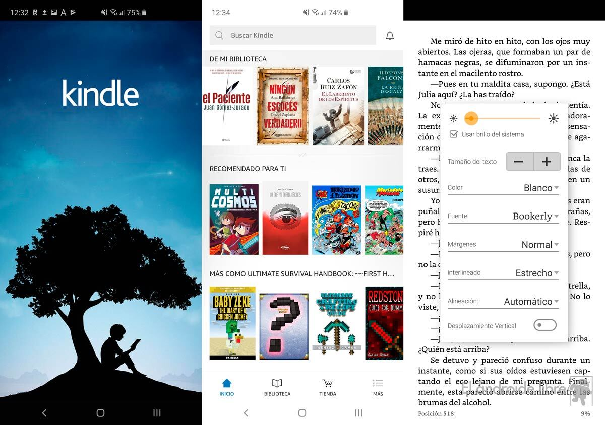

| MAS ARTICULOS | FOTO |
| Apps para escribir libros:
Es difícil definir cuál es la mejor aplicación para escribir libros, puesto que cada una tiene sus pros y sus contras. Según lo que necesites te convendrá enfocarte en una plataforma para subir contenido, o puede que lo que debas hacer es apostar por la organización. Sólo tú conoces qué tipo de escritor eres. Todo lo que podemos hacer nosotros (aparte de ofrecerte la mejor formación en escritura y narración creativa) es contarte qué programas usan los escritores para escribir sus libros. Scrivener Ulysses IA Writer Microsoft Word Miro Grammarly |
 |